library(MASS)
data(Boston)Lecture 1b - Continuous and Categorical Variables
Data is organised into variables, representing attributes or measurements - e.g. age, weight, income, temperature, time, etc.
To begin with, we’ll focus on using standard techniques to explore a single variable at a time. Specifically:
- Exploring Continuous Variables - using statistical summaries, box plots, histograms, and quantile plots
- Exploring Categorical Variables - using bar plots, pie charts, and stacked bars.
These techniques are quite simple, so our focus is on using them effectively to learn about data features and how to do so using R.
There are a number of Graphics packages in R that we could use to visualise our data:
- Base
Rcovers most standard statistical visualisations ggplot2- GGPlot and related packages provide more modern graphics, but it has unusual syntax that can be more difficult to learnplotly- similar to ggplot. However, a bit easier to use- Other custom packages will provide support for specific visualisations
We will focus on the base R functions, as those always available. However, you should experiment with the other packages, but be aware they work differently.
Exploring Continuous Variables
- We focus first on quantitative data that is continuous (i.e. real-valued).
- We view our data as a sample from an underlying continuous distribution - the goal of our explorations here is to seek some clues about the features of that distribution.
- Many possible ways to explore this - graphically, we will focus on histograms and boxplots.
- When we have a particular type of distribution in mind, we can also draw a quantile plot to see how plausible it is.
What features to look for?
- Symmetry or asymmetry - is the distribution skewed to the left or right? e.g. distributions of income are skewed.
- Outliers - are there one or more vales that are far from the rest of the data?
- Multimodality - does the distribution have more than one peak? This could suggest an underlying group structure.
- Gaps - are there ranges of values within the data where no cases are recorded? e.g. exam marks for an exam which nobody fails.
- Heaping - do some values occur unexpectedly often? e.g. the birthweight of babies isn’t.
- Rounding - are only certain values are found? e.g. ages are usually only reported as integers.
- Impossibilities - are there values outside of the feasible ranges? e.g. negative values for strictly positive quantities such as age, rainfall, etc
- Errors - values which look wrong for one reason or another.
Histograms
- A histogram is an approximate representation of the distribution of continuous data where we divide the range of values into bins (or buckets) and draw a bar over each bin with area proportional to the frequency of cases in each bin.
- A histogram is an effective tool for visualising features relating to the shape of the data distribution.
Example: Boston Housing Data
This data set contains the various information on housing values and related quantities for the 506 suburban areas in Boston. The main interest is in the `median values of owner-occupied homes’, but there are 14 variables to explore here.
Looking first at the median housing value, we can produce the histogram below. Some obvious features of note are:
- A concentration of housing values around 20-25, then a sudden drop-off – is there an explanation for this, such as changes in tax levels?
- Possible multi-modality, with modes around 25 and 30 – are there two classes or groups of housing?
- A further spike in values occur in the upper tail of the data, at 50 – this seems dubious, and could be some crude rounding or grouping of all values ‘’50 and over’’.
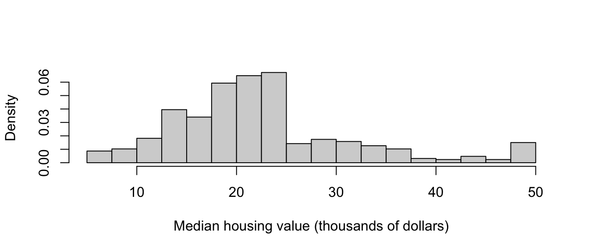
Choosing the width of the bars can substantially affect the detail of the histogram. If we choose too few bins, then we can obscure key features by over-smoothing the data. Alterntaively, if we have too many bins then we can introduce too much noise to the plot that it obscures more general features and patterns. Unfortunately, the only way to find a good compromise is to experiment – R and other software will default to a ‘best guess’, but this invariably needs adjusting. The histograms below show the same data, but using bar widths of 5, 2.5, and 1 unit respectively. We’ll see more sophisticated methods for smoothing the data later.
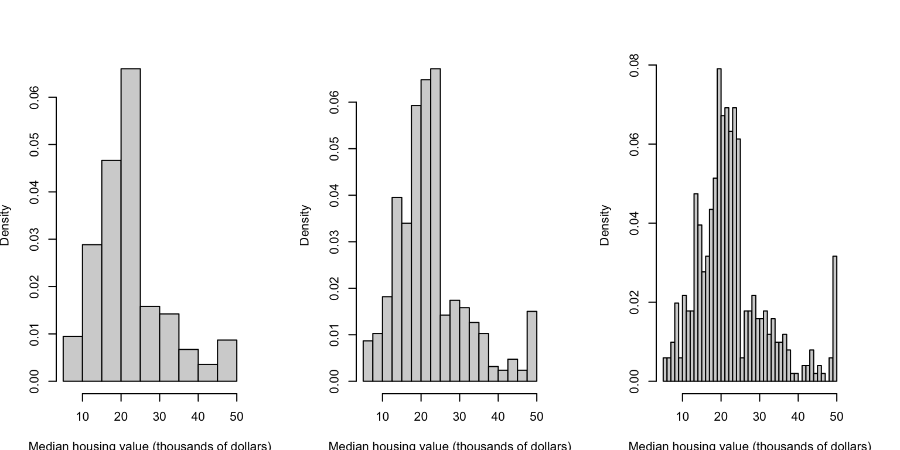
With 14 variables in the data set, we could inspect the histograms of each of the variables. We could do this one-at-a-time, or arrange them in a grid or matrix as below:
`stat_bin()` using `bins = 30`. Pick better value with `binwidth`.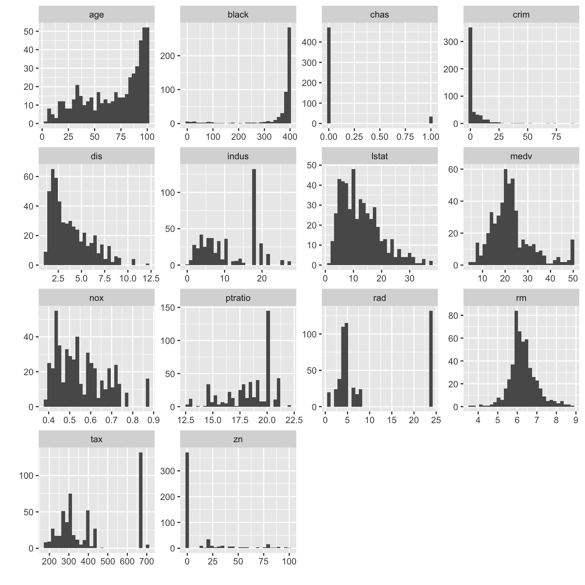
The other variables in the data set show a variety of the features discussed above that we may want to investigate further:
- The ‘age’ variable - in position \((1,1)\) - shows obvious left-skewness.
- The ‘dis’ variable - in position \((1,2)\) - shows right skewness
- The ‘rm’ variable - in position \((3,4)\) - looks symmetric, and possible approximate Normality
- In the variables in the bottom two rows, we see a lot of gaps in the data and heaping on particular values.
- The ‘chas’ variable - in position \((1,3)\) - exhibits heaping on only two values, 0 and 1. This is a discrete binary variable, not continuous a continuous one! We should use different methods to explore this variable.
In a full analysis, we would want to look at the relationships between the variables to determine how the features observed relate to each other. We’ll return to this later…
Example: Old Faithful
library(MASS)
data(geyser)The geyser data set contains 272 observations of the Old Faithful geyser in Yellowstone National Park, Wyoming, USA. The variables are:
duration- Length of eruption in minswaiting- Waiting time to next eruption
To draw a histogram, we use the hist function:
hist(geyser$waiting)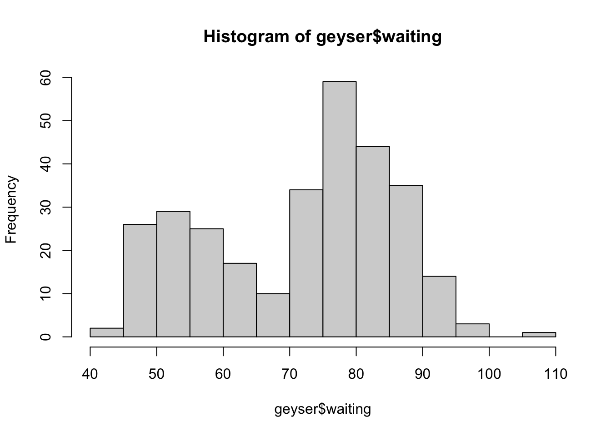
Here we can see the data appear to come in two groups: one group with smaller values (shorter waiting times), and one group of larger (longer waiting times).
We can add a rug plot to an existing histogram to add more detail and to show where the individual data values fall inside the bars:
hist(geyser$waiting)
rug(geyser$waiting)
Now, each individual mark on the horizontal axis shows where we have observed a data value.
Histograms can be customised in many ways, but the most important one is changing the configuration of the bars drawn. This is controlled by the breaks parameter. We can set breaks to a number to indicate an approximate number of bars to draw:
hist(geyser$waiting,breaks=20)
Or we can be more specific and state where each individual bar should begin and end by listing the breakpoints of the bars as a vector:
hist(faithful$waiting, breaks=c(30,45,47,50,52,55,60,75,80,85,95,105))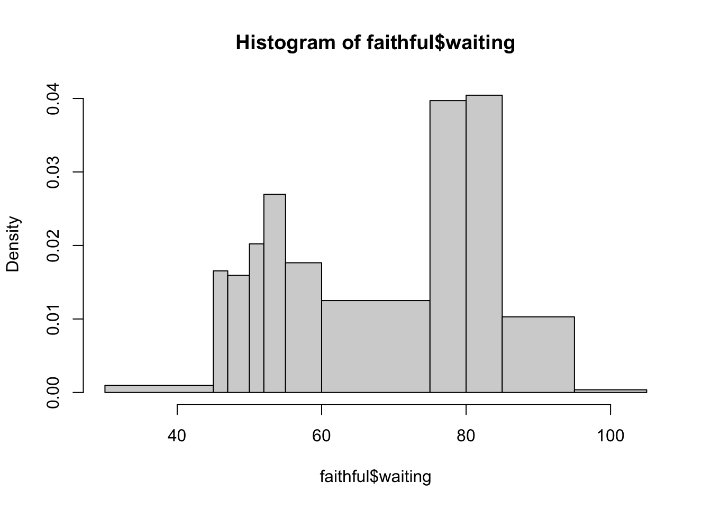
Additionally, almost all plot functions can take the following arguments to customise the plot:
xlab,ylab- sets the x and y axis labelsmain- sets the main titlexlim,ylim- set x and y axis limits, e.g.c(0,10)col- sets the plot colour(s)
Histogram features to look for
- Symmetry or asymmetry - is the distribution skewed to the left or right? e.g. distributions of income are skewed.
- Outliers - are there one or more vales that are far from the rest of the data?
- Multimodality - does the distribution have more than one peak? This could suggest an underlying group structure.
- Gaps - are there ranges of values within the data where no cases are recorded? e.g. exam marks for an exam which nobody fails.
- Heaping - do some values occur unexpectedly often? e.g. zero-inflation
- Rounding - are only certain values are found? e.g. ages are usually only reported as integers.
- Impossibilities - are there values outside of the feasible ranges? e.g. negative values for strictly positive quantities such as age, rainfall, etc
- Errors - values which look wrong for one reason or another.
Summaries and Boxplots
Summarising distributions
- We have considered the shape of a distribution already, and have seen that histograms are a handy way of exploring shape.
- We come now to several summary statistics (recall ISDS):
- the average and median summarise the centre or location of the distribution.
- the standard deviation and inter-quartile range summarise spread around the centre of the distribution.
- The average is the most (over-)used statistic. It is useful especially where distributions are reasonably symmetric.
- For distributions with long tails, it can give misleading signals, e.g. average household income will include households like Buckingham palace which distort the average.
- The median is a measure of the midpoint of a distribution, and, unlike the mean, it is quite resistant to extreme values.
- A robust summary of spread is given by the interquartile range (IQR), the difference between the first and third quartiles. Every distribution has three quartiles:
- The first quartile, \(Q_1\), is a number such that 25% of the values in the distribution do not exceed this number. This is called a lower quartile.
- The second quartile, \(Q_2\), is a number such that 50% of the values in the distribution do not exceed this number. This is the same as the median.
- The third quartile, \(Q_3\), is a number such that 75% of the values in the distribution do not exceed this number. This is called an upper quartile.
- Tukey suggested that we combine the three quartiles with the minimum and maximum values in the data to form a five-number summary.
In R, the fivenum function gives the standard 5-number summary:
fivenum(geyser$waiting)[1] 43 59 76 83 108The summary function adds a 6th number (the mean):
summary(geyser$waiting) Min. 1st Qu. Median Mean 3rd Qu. Max.
43.00 59.00 76.00 72.31 83.00 108.00 Min. 1st Qu. Median Mean 3rd Qu. Max. 43.0 58.0 76.0 70.9 82.0 96.0
Boxplots
A boxplot (or box-and-whisker plot) is constructed from the 5-number summary by: * Drawing a box with lower boundary at \(Q_1\) and upper boundary \(Q_3\). * Drawing a line inside the box at the median (\(Q_2\)). * Drawing lines (whiskers) from the edges of the box to the most extreme data point that is within \(1.5\times IQR\) of the edge of the box (often the minimum and maximum values).

We can draw a boxplot by using the boxplot function on a vector of data values:
boxplot(geyser$waiting)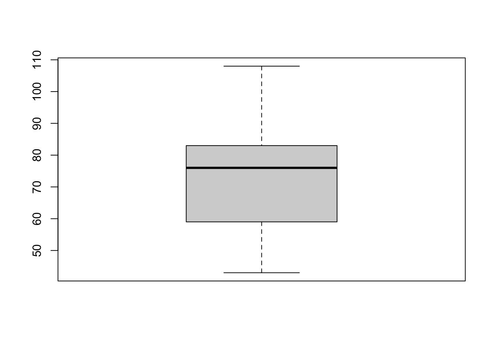
Or we can pass all the columns of a data set to boxplot to draw everything at once:
boxplot(geyser)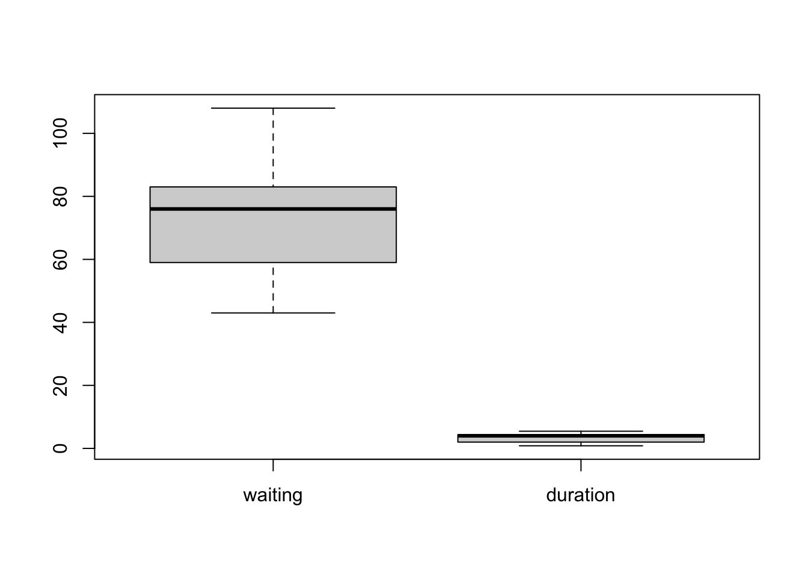
Now, all variables are shown together on a common axis scale. This can be useful if all the variables take values of a similar size, but - as we see here - when the variables are quite different it can obscure the features of some variables by drawing everything together.
Optional arguments for boxplot include:
horizontal- ifTRUEthe boxplots are drawn horizontally rather than vertically.varwidth- ifTRUEthe boxplot widths are drawn proportional to the square root of the samples sizes, so wider boxplots represent more data. Though usually, you have the same number of data points in each column of the data set so this is not often very helpful.
Example: Cuckoo
To show the relationship between a histogram and a boxplot, we have a data set comprising the length (mm) of 100 cuckoo eggs. Drawng the histogram and boxplot together, we can see that the histogram gives far more detail on the shape of the distribution and the boxplot is more of a summary visualisation. The median is indicated in red and the upper/lower quartiles in green, which shows how these quantities align between the plots. Note that the smallest value in the data is flagged as an outlier and drawn separately as a circle on the boxplot.
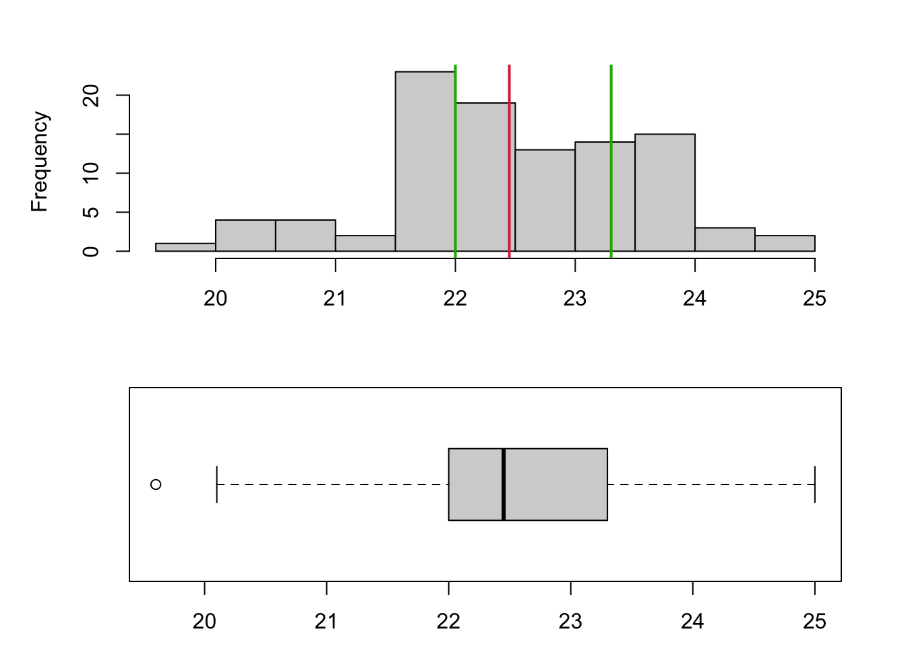
Outliers and Extremes
- Values too far from the centre of the distribution are known as outliers.
- Data values further than \(1.5\times IQR\) from a lower/upper quartile are called an outlier, and usually indicated with a circle or point.
- Anything beyond \(3\times IQR\) is an extreme outlier, and usually indicated with a star or asterisk.
- This definition of outliers is a simple rule-of-thumb. It leads to about 0.7% of (normally distributed) observations being described as extreme for large samples.
- However, if you have a million data points then 0.7% of your data is still a lot! This doesn’t necessarily mean those points are all genuinely extreme or outliers.
Example: Heights of New York Choral Society singers
One advantage of the boxplot, is that as it is a simple summary plot it is much easier to use boxplots to compare many variables at once. For example, the data plotted below are boxplots of the heights in inches of the singers in the New York Choral Society in 1979. The data are grouped according to the voice part they play in the choir. The vocal range for each voice part increases in pitch according to the following order: Bass 2, Bass 1, Tenor 2, Tenor 1, Alto 2, Alto 1, Soprano 2, Soprano 1. We can see immediately that the lowest pitch voices are associated with the taller singers and the higher pitches with smaller singers, which makes a lot of intuitive sense. There will also be a strong correspondance with Gender here too, though that information is not recorded.
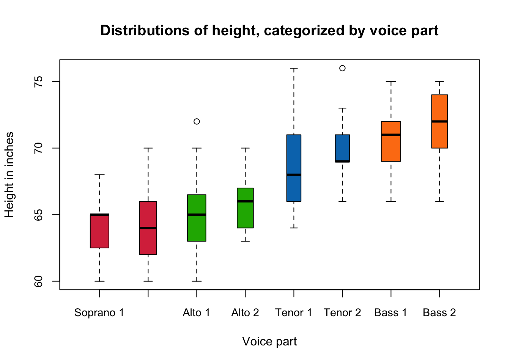
Interpreting boxplots
We should examine a single boxplot for the following features:
- Is the median line in the centre of the 50% portion of the distribution? If not, some degree of skew or asymmetry is indicated.
- Are the whiskers the same length? If not, some degree of skew or asymmetry is indicated.
- Are there any outliers?
We should examine several boxplots for the following features:
- Do the groups have similar shapes? Some might seem symmetric, some skewed.
- Are the median lines about the same, or do there seem to be differences in location** between groups?
- Are the IQRs about the same, or do there seem to be differences in spread between groups?
- Are there some groups with more outliers than others? Such inspection can reveal important differences between groups.
Checking Distributions
Many statistical methods require our data be approximately Normally distributed - but how can we tell whether the approximation is reasonable?
Normal-quantile plots provide a simple and informal way of doing this, without having to do a formal hypothesis test — though that may be a natural next step.
A Normal Quantile (or Q-Q plot) can be used to informally assess the normality of a data set. We construct the plot as follows:
- Order the \(n\) data values, giving the ordered data \(x_{(1)},x_{(2)},\dots,x_{(n)}\).
- Calculate the values \(\frac{1}{n+1},\frac{2}{n+1},\dots,\frac{n}{n+1}\), which gives \(n+1\) divisions of the \((0,1)\) interval.
- Use Normal tables or computer to find the value \(z_k\) such that \(\Phi(z_k)=\frac{k}{n+1}\) for the values \(k=1,2,\dots,n\). The \(n\) values \(z_1,z_2,\dots,z_n\) are the \(\frac{k}{n+1}\) quantiles of the Normal distribution.
- Plot the \(n\) pairs of points \((x_{(1)},z_1), (x_{(2)},z_2), \dots, (x_{(n)},z_n)\).
The basic idea is that these plots have the property that plotted points for Normally distributed data should fall roughly on a straight line.
This is because \(x_{(k)}\) are the sample quantiles of our data, and \(Z_k\) are the theoretical quantiles of a Normal distribution. If our sample distribution is approximately normal, these pairs of values will be in agreement.
Systematic deviations from the straight line indicate non-normality.
We don’t need the points to lie on a perfect straight line – we often use the `fat pen test’, meaning that if the points are covered by placing a fat pen over the top, then that’s enough to conclude approximate normality!
Example: Cuckoo
Let’s inspect the cuckoo egg data for normality. We can draw a histogram first, and compare its shape to a normal curve (blue line). While there looks to be approximate agreement (and we only ever need approximate Normality…), we see some divergence for small values of the data.
Drawing the Normal quantile plot confirms these observations - things look reasonably close to a straight line, but deviate from Normality for small values. However, this would probably be enough to pass our ‘fat pen test’.

In R, we can use the qqnorm function to draw a Normal quantile plot of a single variable. Calling qqline after adds the theoretical straight line for comparison
qqnorm(mtcars$mpg)
qqline(mtcars$mpg)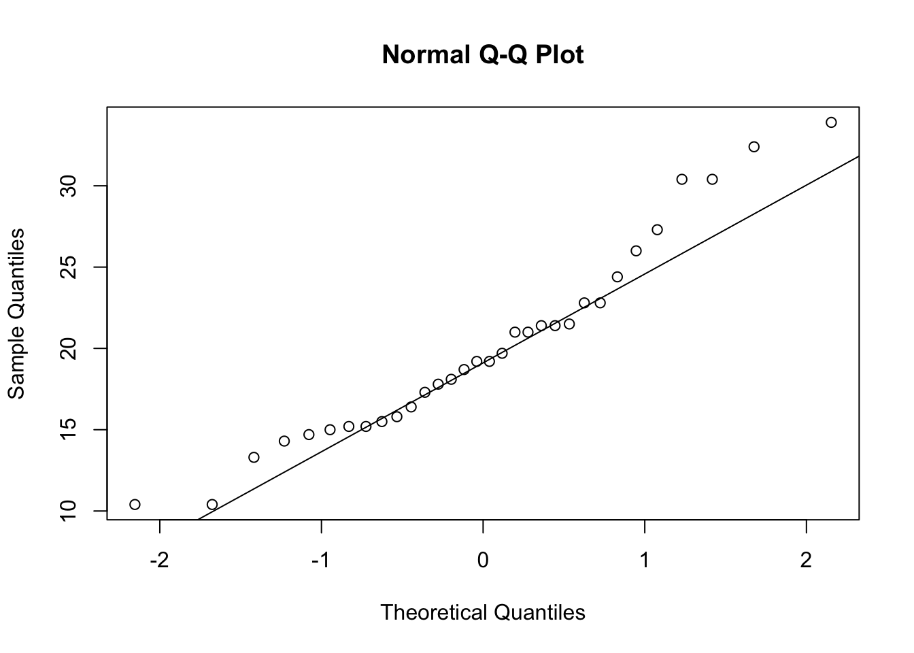
For this variable (miles per gallon of various cars) we see strong departure from Normality as the points lie far from the desired straight line.
Example: Sunspots
To illustrate what happens when our data are very non-Normal, consider this data set of ‘monthly mean relative sunspot numbers’ recorded from from 1749 to 1983. The data are counts of a quantity that is usually quite small in magnitude, this means the data are usually concentrated on small values with an ‘invisible wall’ at 0 - since we cannot observe negative counts! This gives rise to a heavily skewed distribution, as we see in the histogram and boxplot below. The Normal quantile plot (right) now shows strong curvature - not the straight-line feature we would expect if the data were Normally distributed.
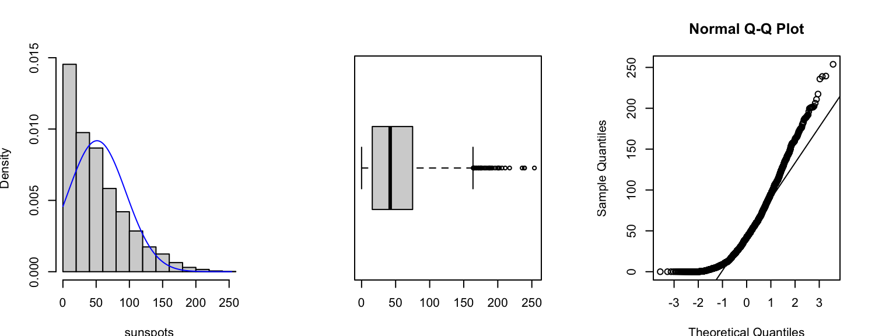
Transformations
- It is occasionally possible to transform the data so that the transformed data are more approximately Normal.
- The kinds of transformation we might employ are simple one-to-one power transformations, such \(\ln x\), \(\sqrt{x}\), \(1/x\), etc.
- We can decide informally whether a transformation is useful by examining a Normal quantile plot of the transformed data.
- Graphical displays can help appraise the effectiveness of the transformation, but the cannot tell you if it makes sense - you should consider the interpretation as well as the statistical properties!
Summary
- The frequency distributions of single continuous variables can exhibit a lot of different features
- Histograms are great at for emphasising features of the raw data, but struggle when comparing multiple variables or groups.
- Boxplots show less detail than histograms, but excel at comparing distributions across variables and for identifying outliers.
- Quantile plots can be used to see if data (approximately) follow a particular distribution.
Modelling Considerations & Testing
- Tests using the summary statistics - tests of means and variances against hypothesised values may be appropriate. Normality - formal tests of Normality, such as the KS test, could be applied if following a Normal distribution is important
- Outliers - formal tests for outliers exist (‘outliers’ package) and could be applied, plus the effect of excluding outliers from any analysis could be explored
- Multimodality - methods for assessing multimodality also exist (e.g. ‘diptest’ package), but care must be taken to avoid interpreting data noise as structure
- Sample size - many of the methods can be overly sensitive for very large samples
Exploring Categorical Variables
Categorical or qualitative variables can only take one of a limited number of possible values (categories). The possible values a variable can take are known as the categories, levels, or labels.
Categorical data comes in various forms depending on how the categories relate to each other:
- Nominal - the categories have no standard order (e.g. eye colour)
- Ordinal - the categories have an intrinsic order (e.g. age recorded as “young”, “middle-aged”, and “old”)
- Discrete - the categories are numerical, and hence ordered, but can only take a finite number of values (e.g. number of people per household)
For example, the data set below contains the responses to seven questions put to 1525 voters in an election survey for 1997-2001. All the variables in the data are categorical of different types. vote is the party the voter would vote for is clearly categorical, as is gender. The others are ordinal, but with numerical values. In some cases, where the variable is discrete, numerically valued, with a large number of categories - like age - it does make sense to treat it as continuous. Variables such as age are often thought of as being fundamentally continuous albeit recorded as discrete values.
load("beps.Rda")
head(beps) vote age economic.cond.national economic.cond.household Blair
1 Liberal Democrat 43 3 3 4
2 Labour 36 4 4 4
3 Labour 35 4 4 5
4 Labour 24 4 2 2
5 Labour 41 2 2 1
6 Labour 47 3 4 4
Hague Kennedy Europe political.knowledge gender
1 1 4 2 2 female
2 4 4 5 2 male
3 2 3 3 2 male
4 1 3 4 0 female
5 1 4 6 2 male
6 4 2 4 2 maleThe levels of a categorical variables are expressed by a factor coding to represent the different categories. Numerical codings are sometimes used, e.g. for a variable on marital status we could define:
- single
- married
- separated
- divorced
- …
While this helps abbreviate the categories, it is important to remember that variables expressed this way are not the same as a numerical variable that can take these values. We should never treat these values as if they were continuous - for example, it could be tempting to take an average and, say, get a result of 2.6. But this is meaningless as it doesn’t correspond to any of the possibilities, the value we get depends entirely on how we coded our factors, and the rules of arthimetic make no sense for these variables – 1+3 may equal 4, but that does not mean single+separated=divorced!
Instead, using text strings to represent the categories is safest and avoids mistakes such as these. However, care must be taken to ensure that there is consistency in how these levels are labelled, e.g. do we treat the labels “Female”, “female”, “F” as the same?
Summary tables
Compared to continuous variables, categorical variables are relatively simplistic and usually contain little useful information on their own. As data, they usually reduce to the counts of the number of observations in the various categories.
We can obtain summary tables of the frequency of each category by using the table function.
table(beps$vote)
Conservative Labour Liberal Democrat
462 720 343 The R output is useful for a quick summary, but will need some manual re-formatting to make it presentable. R output is seldom an acceptable way to present information to others, and almost always should be transformed (e.g. into a summary table of relevant information) or summaries (e.g. by reporting only the relevant information R has given you). Here we can transform the ugly R code into a small data table:
| Conservative | Labour | Liberal Democrat |
|---|---|---|
| 462 | 720 | 343 |
The xtabs function does something similar, and will be more useful later on when we have multiple variables at once:
xtabs(~vote,data=beps)vote
Conservative Labour Liberal Democrat
462 720 343 Visualising Single Categorical variables
Visualisation of categorical variables usually focuses on plotting the counts of the categories, or the proportions that each category contribute to the total.
The range of useful graphics for such data is usually limited to:
- Barcharts - depict the counts or proportions by the size of the bar
- Piecharts - display the proportions of categories as fractions of the whole
- Variations of the above (stacked bars, treemaps)
What features to look for?
- Extremes - the largest (smallest) category is often of particular interest.
- Uneven distributions - Observational studies can often observe many more cases of one category than others. Some categories may not be observed
- Unexpected patterns of results - surprisingly large or small numbers for particular categories
- Large numbers of categories - these may require grouping together or filtering out
- Don’t knows, missing values - Missing, unknown, or unavailable data is common in e.g. surveys and opinion polls.
- Errors in factor codings - e.g. gender could be denoted ‘M’ or ‘F’, but we may find values of ‘m’, or ‘female’.
Barplots or bar charts
A bar chart or barplot simply draws the distribution of counts per category. We can use barplot to draw a barplot from a summary table of counts generated by the xtabs function
barplot(xtabs(~vote,data=beps))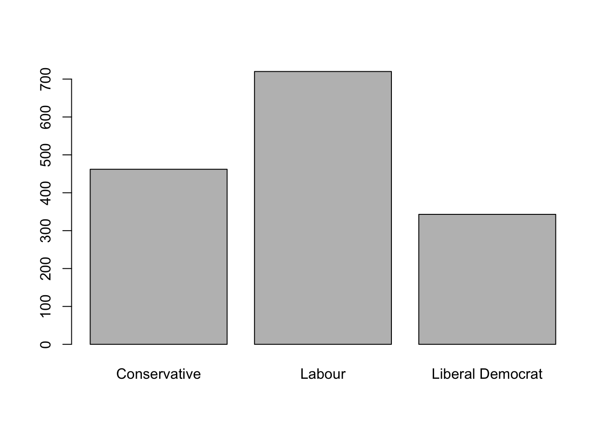
barplot takes a number of additional arguments to customise the plot:
names- a vector of labels for each barhoriz- set to TRUE to show a horizontal barplot.width- a vector of values to specify the widths of the barsspace- a vector of values to specify the spacing between barscol- a vector of colours for the bars
barplot(xtabs(~vote,data=beps),col=c('blue','red','orange'), horiz=TRUE, names=c('Con','Lab','LibDem'))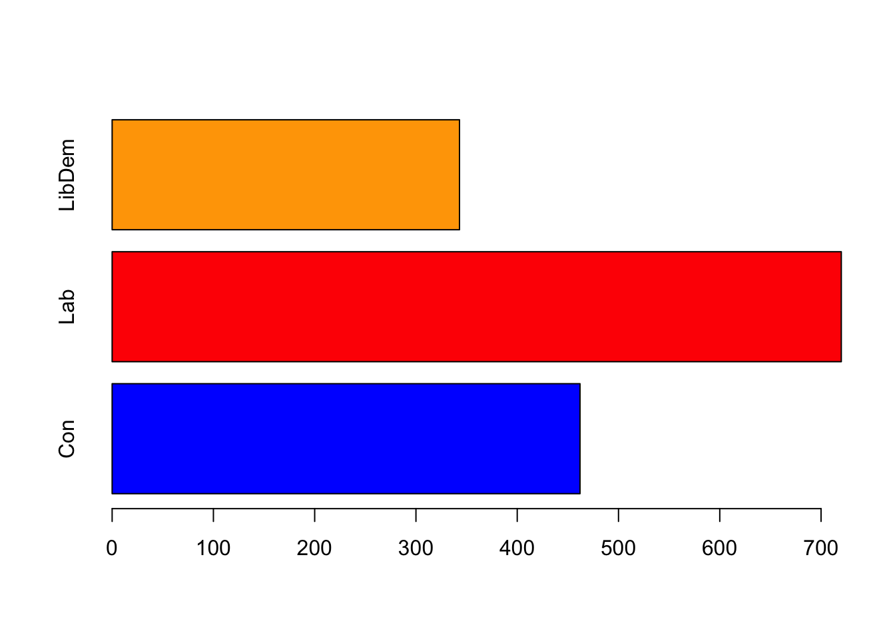
Example: Voter population In Germany 2009
Here we have the number of eligible voters in each of the 16 Bundesländer (states) in the German Federal elections in 2009.
load('btw9s.Rda')
head(btw9s) Bundesland Voters EW State1
BW BW 7633818 West BW
BY BY 9382583 West BY
BE BE 2471665 East BE
BB BB 2128715 East BB
HB HB 487978 West HB
HH HH 1256634 West HH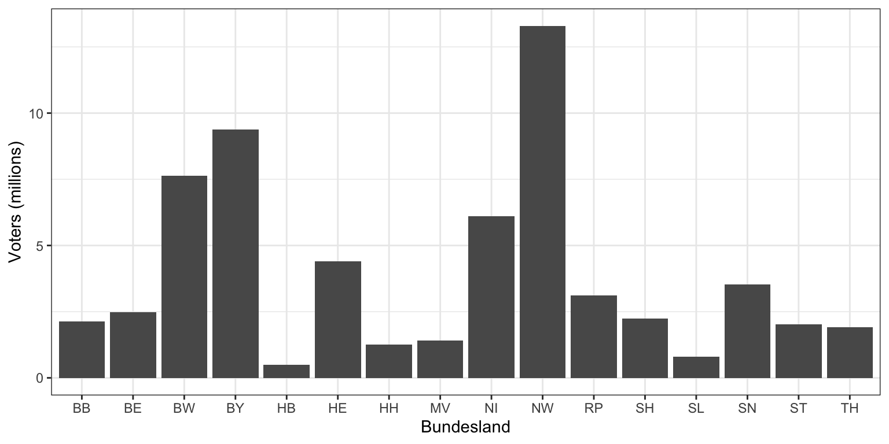
As states are categorical the ordering of the bars is arbitrary, which limits what we can interpret - but clearly there are some very large and very small states.
We notice wide variation in populations - the largest is ‘NW’ (Nordrhein-Westfalen) which includes many major cities like Cologne and Düsseldorf; the smallest is ‘HB’ which is Bremen, a smaller city-state.
The ordering of bars can be used for emphasis - here its alphabetical. Ordering the bars by size gives a much better impression of the relative sizes of the sixteen states:
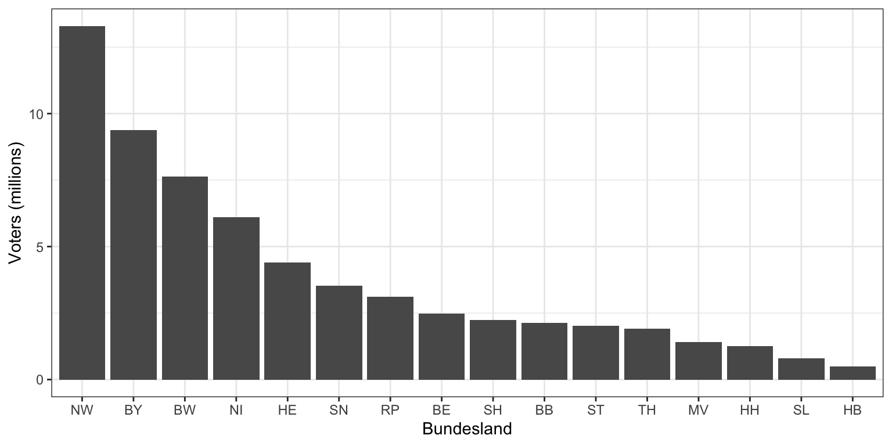
Using problem-specific structure can help give you context to your analysis. For example, we can separate the states belonging to the former East (left) and West Germany (right) and use a little colour for emphasis:
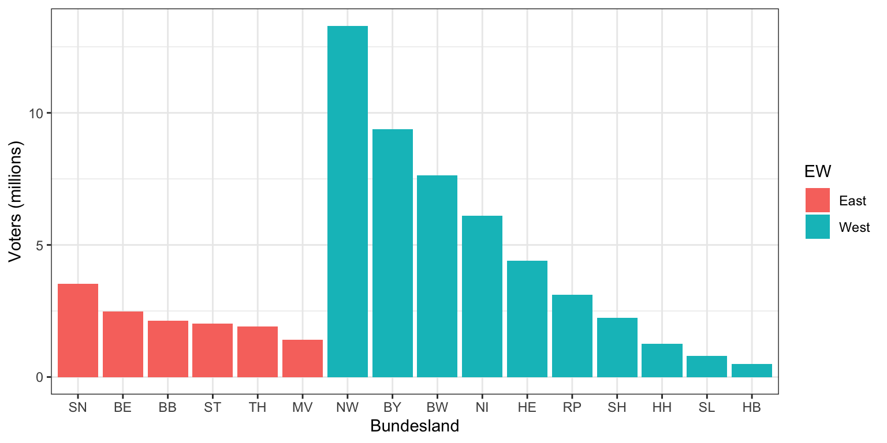
Clearly the West German states are substantially more populous.
Example: Titanic Passengers
titanic <- data.frame(Titanic)The Titanic data contains information on the fate of survivors fatal maiden voyage of the ocean liner Titanic. The data are in the form of counts of survivors (and not) summarised by economic status (class), sex and age. The variables are all categorical and defined as
Class- 1st, 2nd, 3rd, or crewSex- Female, MaleAge- Adult, ChildSurvived- No, Yes
Before we analyse the data, think about what you expect the results to show. Do we expect more Male or Female survivors? Do we expect those in 1st class to fare better than those in 3rd class? Would we expect the Crew to fare better or worse than the passengers?
By thinking about what we might expect before looking at the data, we allow ourselves to be surprised when we find features we did not expect!
par(mfrow=c(1,4))
barplot(xtabs(Freq~Survived,data=titanic), col="red",main="Survived")
barplot(xtabs(Freq~Sex,data=titanic), col="green",main="Sex")
barplot(xtabs(Freq~Age,data=titanic), col="orange",main="Sex")
barplot(xtabs(Freq~Class,data=titanic), col="blue",main="Sex")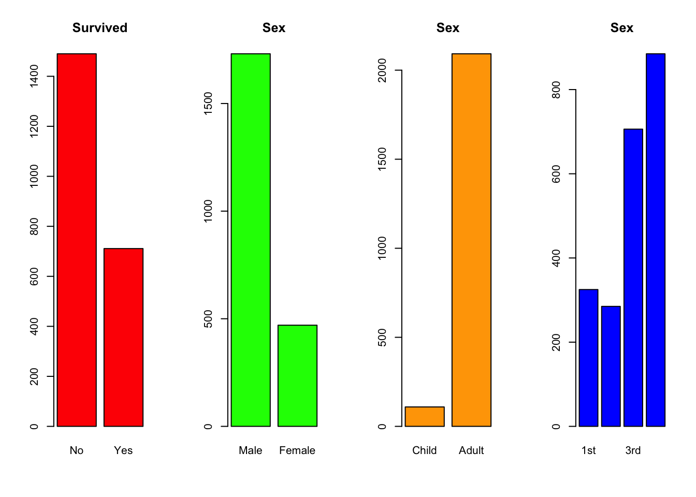
What do we see here?
- More than twice as many passengers died as survived
- More Male than Female passengers on board - more than 3x as many!
- Very few Child passengers
- More people in Crew than any other class; fewest in second class
The interesting questions arise when we try to think whether Survived is related to the other variables. But we’ll have to come back to this later on.
Visualising Proportions
Proportions are of particular interest in opinion polls, or studies where the composition of a larger population is of interest. In elections, the values of the counts are far less important than the share of the total - in particular the size of the largest proportion.
Visualisations of proportions are based around the simple idea of dividing the larger whole into pieces which reflect the corresponding fractions.
piecharts- slices of a circlecomposite or stacked barcharts- fractions of a bartreemaps- tiles within a square or rectangle
A stacked barplot is a variation of a standard barplot where the individual bars are broken up into portions reflecting the different. When we just have one variable, the effect is to stack the individual bars on top of each other.
barplot(as.matrix(xtabs(~vote,data=beps)), ## note we have to conver to a matrix here
beside=FALSE,
horiz=TRUE,
col=c('blue','red','orange'))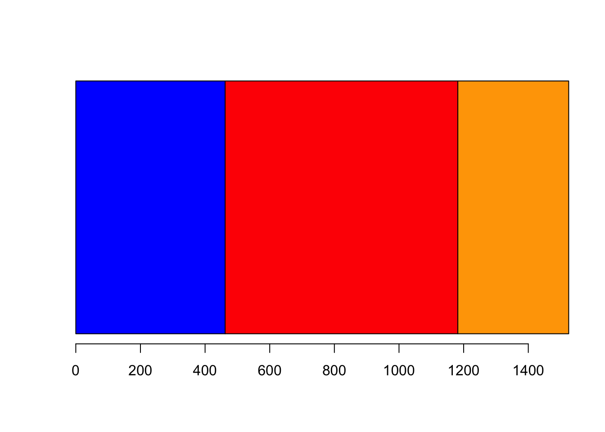
Here we can see the individual sizes of the bars, as well as a clear indication of their contribution to the overall total. So, it’s easy to read that the red category (Labour) has the highest share of the vote in this poll.
The traditional pie chart can be generated using pie:
pie(xtabs(~vote,data=beps), col=c('blue','red','orange'))
We’re probably all familiar with this, but the basic idea is to use slices of the ‘pie’ to represent the proportion. Unfortunately, pie charts are often not the best visualisation as it can be difficult to detect differences between similarly-sized slices of a circle when compared to similiarly sized rectangles.
Historical aside: the invention of the pie chart is often attributed to Florence Nightingale. In one of the earliest conventional uses of data visualisation, she used an early version of the pie chart highlight the poor conditions of soldiers in field hospitals during the Crimean War (1854-6). Florence was an early pioneer of statistics and the first female member of the Royal Statistical Society – this aspect of her life and achivements is often overlooked given her frequent association with nursing.

Bonus Content: Variations of Standard plots
Stem and Leaf plots
A stem and leaf plot presents the numerical values of the data in a similar form to a histogram.
stem(geyser$waiting)
The decimal point is 1 digit(s) to the right of the |
4 | 3
4 | 577888889999999
5 | 00000000000011111222223333333444444444
5 | 5556677777777788888999
6 | 0000001112222234
6 | 5555555668889999
7 | 01111122222233333344444444
7 | 5555555556666666677777777778888888888888888899999999999
8 | 00000000000001111111111112222222233333344444444444
8 | 5555555666667777777777777788888889999999
9 | 0011222333333334
9 | 668
10 |
10 | 8This plot resembles a sideways histogram, only it shows extra information on the values within each bar.
Stripplot
A stripplot is similar again, but displays the data as points rather than the numerical value
stripchart(geyser$waiting, method='stack')By default, it draws a hollow box for each data point which can make it difficult to read. We can modify the shape of the points by the pch (plot character) argument can help improve readability:
stripchart(geyser$waiting, method='stack', pch=16)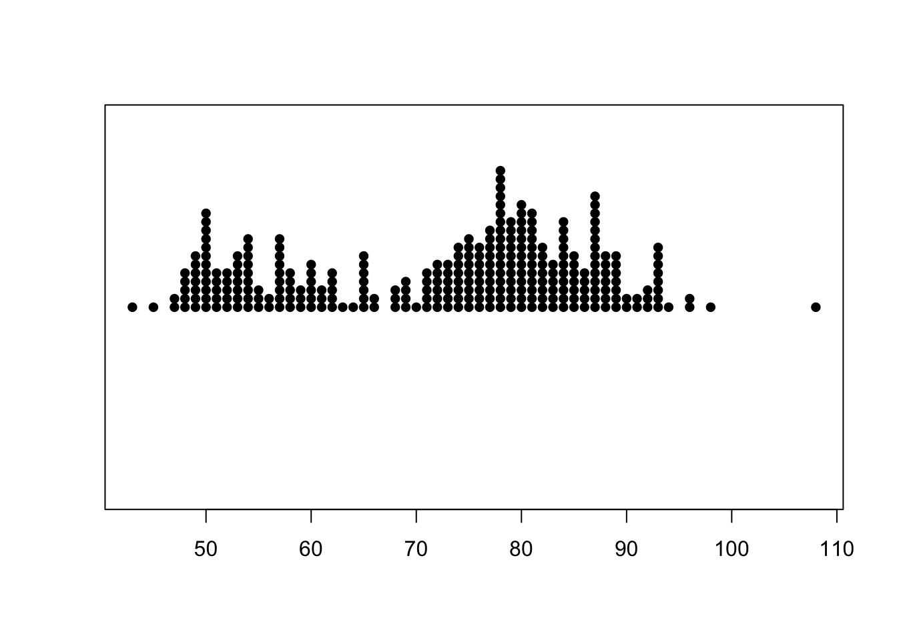
Beeswarm plots
A beeswarm plot is similar to stripplot, but uses various techniques to separate nearby points such that each point remains visible. It also draws the plot symmetric about a central axis, rather than stacking up points from a baseline.
library(beeswarm)
beeswarm(geyser$waiting,horizontal = TRUE)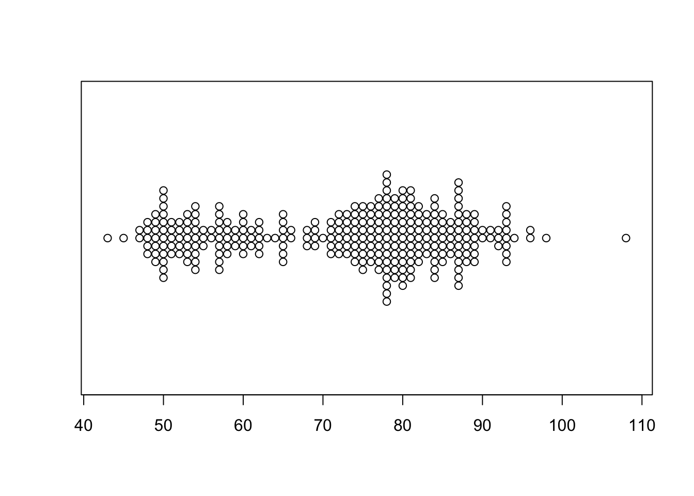